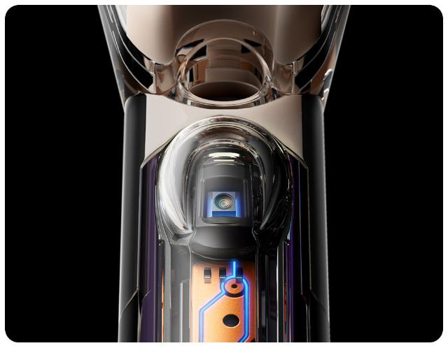
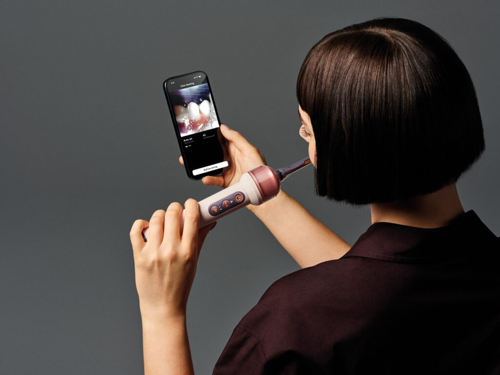
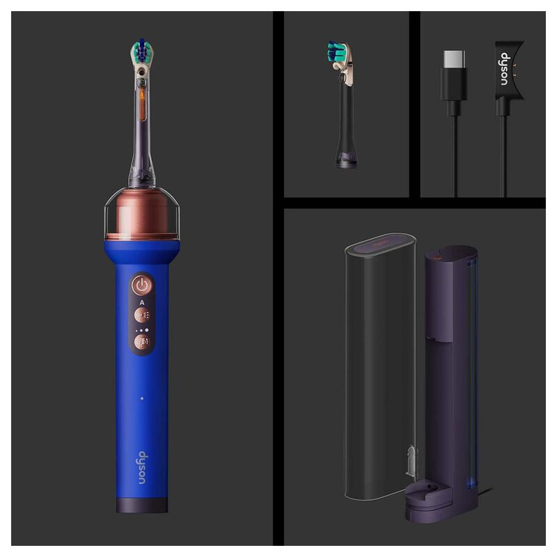
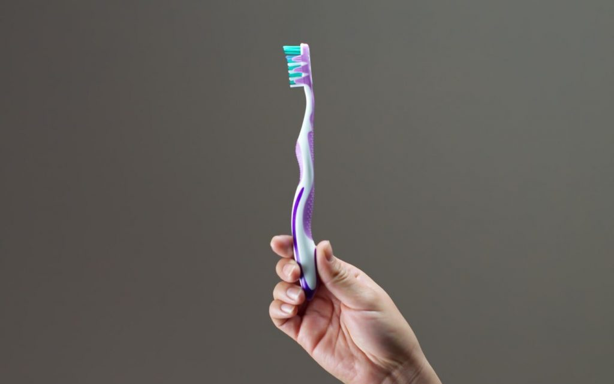
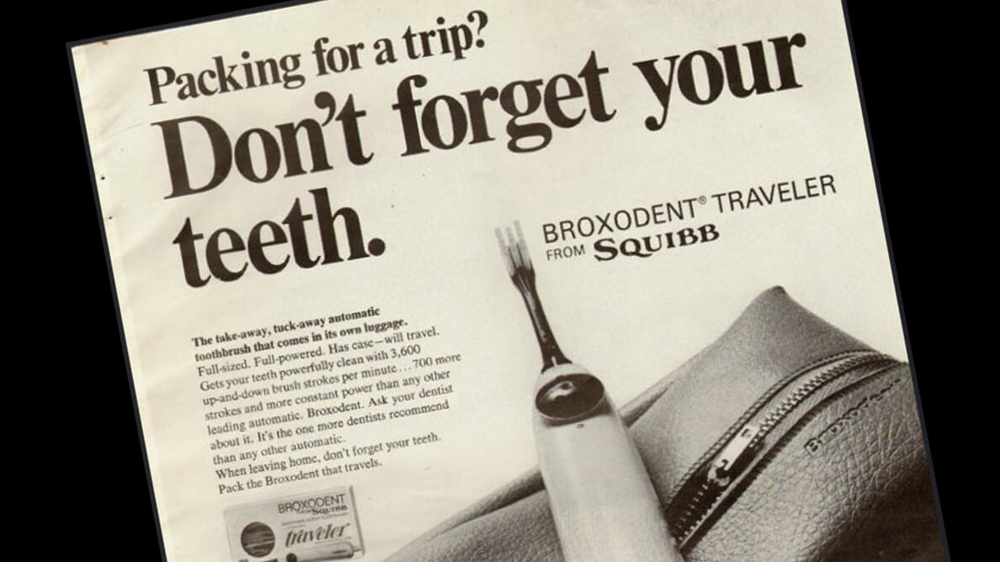
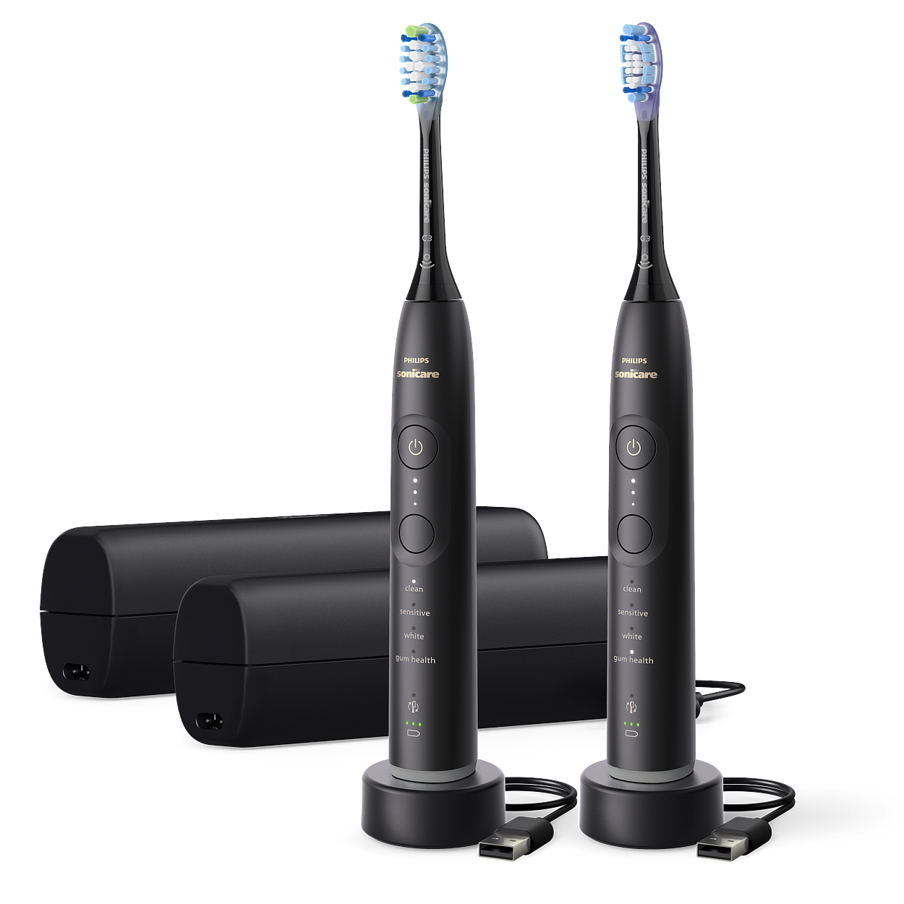

Sensación y percepción
Teoría La percepción es subjetiva: dos personas pueden interpretar distinto lo mismo.
CameraJet Convierte los huecos entre dientes en una imagen clara en el móvil y la acompaña con etiquetas, como el modo Auto-jet.
Dyson · Cuidado bucal
Un cepillo de dientes con cámara que ve los huecos entre los dientes y decide por ti dónde limpiar.
Trabajo de Fundamentos de la Interacción Persona-Ordenador

Dyson presentó el CameraJet en París el 1 de septiembre de 2026 y lo puso a la venta ese mismo día, en su web y en tiendas seleccionadas. Es el primer producto de cuidado bucal de la marca.
En España se vende desde esa fecha a un precio oficial de 479 euros. Lo confirman la web de Dyson España y medios como Xataka, que publicaron su análisis ese mismo día. Todas las fuentes están en el apartado Más información.
El CameraJet combina tres cosas en un mismo objeto: un cepillo eléctrico sónico, una cámara diminuta con inteligencia artificial y un pequeño chorro de enjuague que actúa como hilo dental.

Hacer una foto nítida con un cepillo que vibra, con saliva y con espuma no es fácil. Dyson lo resuelve con varios trucos:

El cepillo se conecta por Wi-Fi y Bluetooth con la aplicación MyDyson. Si quieres, puedes ver en directo lo que graba la cámara mientras te cepillas, una imagen que normalmente nunca ves por ti mismo.
La app también permite elegir entre detección automática e irrigación manual, ajustar la intensidad del chorro y consultar guías de uso. La persona puede dejar que el cepillo decida o tomar el control cuando prefiera.

Los irrigadores clásicos lanzan un hilo de agua muy fino. Dyson eligió un chorro con forma de cono, que cubre más superficie y limpia con más suavidad. Sale de un depósito de 12,5 mililitros, con una presión baja que, según Dyson, es más delicada con encías y esmalte.
El cepillo, además, usa una oscilación sónica variable para que las cerdas no se queden clavadas contra el diente, y avisa cuando aprietas demasiado.
El CameraJet no se vende como un cepillo suelto, sino como un pequeño sistema. Todo está pensado para que la cámara funcione bien.

Precio oficial en España: 479 euros.
El CameraJet se seleccionó tras valorar distintas opciones, por los cuatro motivos siguientes.
Muchos de los dispositivos más recientes que se localizaron eran prototipos que no habían llegado al mercado. El CameraJet se comercializa desde el 1 de septiembre de 2026.
La búsqueda se concentraba en gafas de realidad virtual y anillos inteligentes. Un cepillo con cámara e inteligencia artificial plantea un enfoque distinto.
El producto se dio a conocer en redes sociales tras su salida, lo que despertó el interés por analizarlo con más detalle.
Modifica la interacción y no solo la interfaz, lo que permite aplicar los factores humanos, el ciclo de Norman y el diseño universal.
Un cepillo parece un objeto cotidiano, pero el CameraJet es un sistema interactivo completo: tiene sensor de entrada (la cámara), procesamiento (la IA), salida (el chorro y la aplicación) y un bucle de retroalimentación con la persona.
La superficie
Negroponte: el lugar donde se encuentran los bits y las personas.
El proceso
Por eso no solo cambia la interfaz: cambia la interacción.
Según el CHI (Computer-Human Interaction), la interfaz es un lenguaje de entrada para el usuario y de salida para el ordenador. En el CameraJet funciona así:
Botones, ajustes de la app y la cámara
La IA detecta los huecos
Chorro, imagen y avisos
La cámara «entiende» la boca sin que la persona haga nada: es una interacción implícita.
Teoría La percepción es subjetiva: dos personas pueden interpretar distinto lo mismo.
CameraJet Convierte los huecos entre dientes en una imagen clara en el móvil y la acompaña con etiquetas, como el modo Auto-jet.
Teoría Es preferible el reconocimiento al recuerdo: no hay que cargar la memoria del usuario.
CameraJet No hay que acordarse de qué zonas faltan ni de usar hilo dental. Cepillarse ya es un hábito aprendido (memoria procedimental).
Teoría La atención es selectiva (filtro de Broadbent): no se puede atender a todo a la vez.
CameraJet Delegar la búsqueda de huecos baja la carga mental. Mirar el móvil la reparte, por eso la imagen en directo es opcional.
Teoría Cuanto más grande y cercano es un objetivo, menos se tarda en alcanzarlo.
CameraJet El botón para terminar la visualización es ancho para un mejor alcance del pulgar.
Teoría Casi nadie lee el manual: se aprende explorando.
CameraJet Se cepilla como siempre y lo nuevo está en la app, con guías de uso para quien las quiera.
Teoría Es la imagen que nos hacemos de cómo funciona un sistema.
CameraJet Ver los huecos corrige la idea de que cepillarse basta. Pero el cepillo no «limpia solo»: la persona sigue moviéndolo.
El ciclo describe en siete etapas cómo hace una persona una tarea con un sistema. Así queda al limpiarse los dientes con el CameraJet:
Su mayor aportación está en el lado de la evaluación (etapas 5 a 7): antes la persona no podía ver el estado de su boca y no sabía si había cumplido el objetivo. También simplifica la ejecución, porque el cepillo asume parte de las decisiones. Los problemas de usabilidad aparecen cuando la persona no entiende lo que el sistema le muestra, y ahí está el riesgo del CameraJet: si la imagen no se interpreta bien, seguirá sin saber si ha limpiado bien.
Un solo gesto sustituye al cepillado y al hilo dental.
EficienciaLa imagen en directo te dice si has llegado a todos los huecos.
Evaluación (Norman)El cepillo localiza los huecos; no hay que acordarse de ninguna zona.
Memoria y carga mentalChorro de presión baja y aviso si aprietas demasiado.
Tolerancia al errorEvita el hilo dental, que exige habilidad con los dedos.
Bajo esfuerzo físicoModo automático o manual, la imagen en directo es opcional.
Flexibilidad de usoEstos son los beneficios que permite el diseño. Cuánta placa se elimina de verdad solo lo dirán estudios independientes (ver lo que conviene tener en cuenta).
El diseño universal busca productos que pueda usar el mayor número de personas posible, sin adaptaciones especiales. Esta tabla recoge los siete principios y mi valoración de cómo los cumple el CameraJet.
| Principio | En el CameraJet | Valoración |
|---|---|---|
| 1. Uso equitativo | Hay una única versión para todos, sin modelos especiales. Pero el precio (479 €) y la necesidad de un móvil para la visión en directo limitan quién puede aprovecharlo. | Cumple en parte |
| 2. Flexibilidad de uso | Admite detección automática o irrigación manual, permite ajustar la intensidad del chorro y deja decidir si se mira o no la imagen en directo. | Cumple |
| 3. Uso simple e intuitivo | El gesto es el mismo de siempre, cepillarse. El sistema decide dónde lanzar el chorro y el mango tiene pocos botones, agrupados. | Cumple |
| 4. Información perceptible | Da información visual (la cámara en la app) y avisos, como el de exceso de presión. Pero lo más novedoso, la imagen, depende de la vista, y una persona con baja visión recibe menos información. | Cumple en parte |
| 5. Tolerancia al error | Avisa si se aprieta demasiado, usa un chorro de presión baja y detecta los huecos por sí mismo, lo que evita olvidar zonas. | Cumple |
| 6. Bajo esfuerzo físico | Un solo gesto sustituye al cepillo e hilo dental. El hilo exige destreza con los dedos y puede cansar, así que el CameraJet puede resultar más cómodo para quien tiene poca destreza. | Cumple |
| 7. Tamaño y espacio para el acceso y uso | El mango es más voluminoso que el de un cepillo normal. Habría que comprobar si resulta cómodo para manos pequeñas o con poca fuerza. | A comprobar |
Según la norma ISO 9241-11, la usabilidad es la medida en que un producto puede ser usado por determinados usuarios para conseguir objetivos concretos con efectividad, eficiencia y satisfacción, en un contexto de uso específico. Estas son las tres medidas aplicadas al CameraJet:
¿Consigue la persona limpiar entre los dientes? Dyson afirma que elimina hasta un 69% más de placa que otros cepillos, pero son pruebas propias. Falta ver estudios independientes.
Se evita un paso entero, el hilo dental. A cambio aparecen tareas nuevas: cargar el cepillo y rellenar el depósito.
Es subjetiva. En la ficha de MediaMarkt España, los compradores le daban una media de 4,6 sobre 5 con 119 opiniones cuando la consulté.
El CameraJet no sustituye a un solo objeto, sino a varios que hasta ahora se usaban por separado. Esta es la cadena de inventos que lo hace posible.
Primero se usaron ramitas para masticar y después cepillos con cerdas animales. Tras 1938 las cerdas de nailon reemplazaron a las naturales. Todo dependía de la habilidad de cada persona, sin ningún tipo de aviso.
El dentista Levi Spear Parmly lo popularizó para limpiar entre los dientes, justo el sitio al que no llega el cepillo. Hacía falta destreza y constancia.
El suizo Philippe-Guy Woog creó el Broxodent. Automatizó el movimiento del cepillado, pero seguía sin saber nada de la boca.
Waterpik llevó a las casas el chorro de agua para limpiar entre dientes. Es el antecesor directo del chorro del CameraJet, aunque se maneja con la mano y hay que apuntar a ojo.
Sonicare empleó vibraciones de alta frecuencia para limpiar mejor. Más tarde llegaron cepillos que se conectan por Bluetooth y guardan el historial en una aplicación.
Reúne cepillo sónico, irrigador y aplicación, y añade lo que faltaba: un sensor que ve la boca y decide dónde actuar.




| Característica | Cepillo manual | Cepillo eléctrico | Cepillo conectado | CameraJet |
|---|---|---|---|---|
| Quién decide dónde limpiar | La persona | La persona | La persona, con guía en la app | El dispositivo, según lo que ve |
| Retroalimentación | Ninguna | Avisos básicos | Datos en la app | Imagen real de la boca |
| Limpieza entre dientes | Hace falta hilo aparte | Hace falta hilo aparte | Hace falta hilo aparte | Chorro dirigido mientras te cepillas |
| Esfuerzo mental | Alto | Medio | Medio | Bajo |
Un buen análisis de interacción no solo cuenta las ventajas. Estos son los puntos más discutidos desde el lanzamiento.